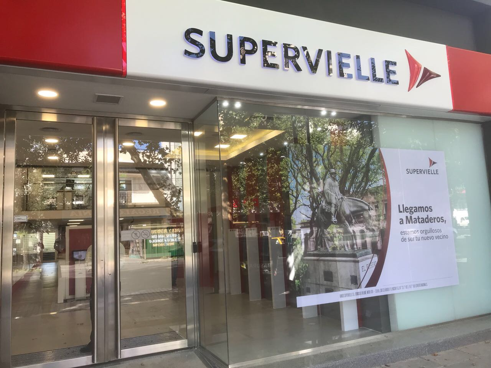
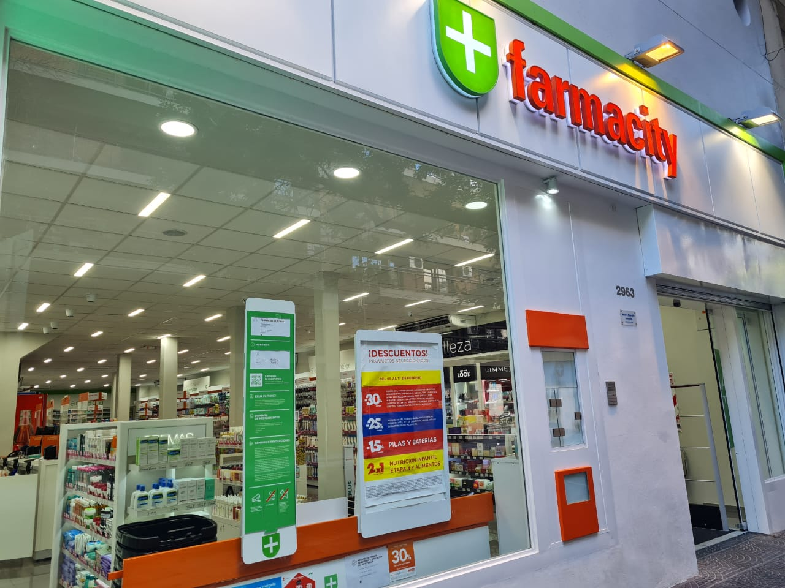

BANCO SUPERVIELLE
Subtesorero (09/2019 - Actualidad)
Tesorería. Gestión de factoring y cheques. Análisis de mora. Manejo de efectivo. Uso de herramientas de análisis.
Cajero (11/2017 - 09/2019)
Transacciones financieras y servicio al cliente. Ascenso a "Subtesorero".
FARMACITY
Asistente de gerente (11/2013 - 11/2017)
Tareas administrativas. Pedidos, controles de stock e inventarios, presupuestos y análisis de objetivos.
Auxiliar de cajas (01/2012 - 11/2013)
Tareas administrativas y reemplazos de superiores. Atención al cliente. Ascenso a rol de 'Asistente de Gerente'.
Cajero administrativo (12/2010 - 01/2012)
Transacciones, tareas administrativas y servicio al cliente. Ascenso a puesto de 'Auxiliar de Cajas'.
